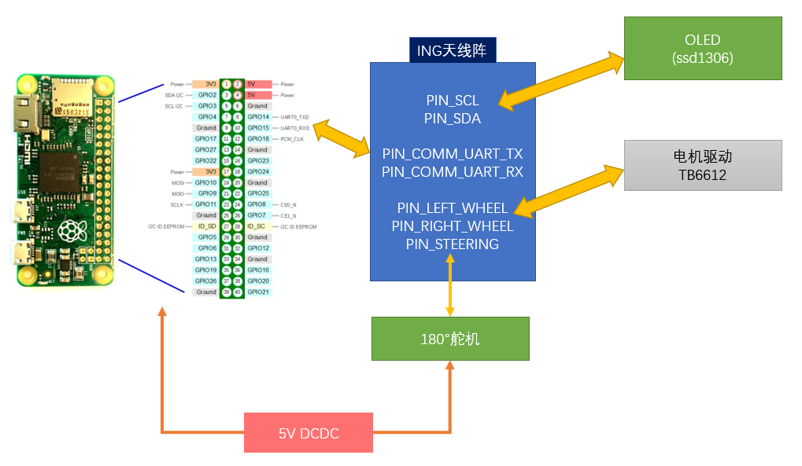
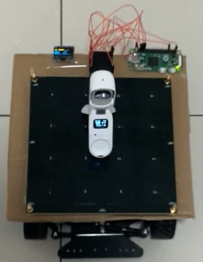

目前市场上可见几种具备自动跟随功能的行李箱，多依靠视觉或者 UWB 技术实现。 本文介绍如何利用 BLE AoA 寻向技术开发一个具有自动跟随功能的小车。这个小车能够跟随信标前进、转向、停止。
项目源代码 注意: 本文及参考代码仅为概念演示，不考虑信标与小车的配对等问题。
整体框架
自动跟随小车主要包括以下部件、模块。
| 名称 | 功能 |
|---|---|
| ING9188xx 4x4 URA 天线阵 | CTE 采集，主控 |
| 树莓派 Raspberry Pi Zero | 负责 AoA 计算 |
| 智能小车底盘 | 包含车架、电机、转向舵机 |
| TB6612 电机驱动模块（带 3.3V 输出） | 底盘电机驱动，为天线阵供电 |
| 可调 DC-DC 模块 | 为树莓派、舵机提供 5V 输出 |
| 128x64 OLED 模块（驱动芯片 SSD1306） | 显示调试或者状态信息（可选） |
| 锂电池 | 提供动力 |
| 若干杜邦线 |
小车的框图如下所示。其中主控为 4x4 URA 上的 ING9188xx，它将采集到的 CTE 数据提交到树莓派完成方位角解算，再据此调整小车的前进方向。 另外需要一块 ING9188xx 开发板用来发送 CTE 信标（烧录 Peripheral LEC & CTE 即可），引导小车前进。 OLED 模块可用来显示调试或者状态信息，它的驱动、使用方法参考 Central Throughput。 由于树莓派及底盘上的舵机都需要 5V 电源，且耗电较大，所以使用了 DC-DC 模块提供 5V 输出。

主要功能详解
1. 底盘控制
由于天线阵的 IO 口数据有限，小车只能前进，不能后退。有关 TB6612、电机的驱动、舵机控制等，请参考 蓝牙遥控车。
Q：树莓派 IO 丰富、功能强大，为什么不用它做主控？
A：我们总是倾向于使用自己的产品。
2. CTE 采集
AoX 算法时间、空间复杂度都非常大，无法在 ING918 这样的低功耗 SoC 上运行。事实上，即便对于树莓派的低端型号 Raspberry Pi Zero 来说， 进行 4x4 全阵列计算仍然非常吃力。考虑到我们只需要方位角，可以只使用 $1 \times 4$ ULA 子阵列，Pi Zero 完成一次计算大概需要 $0.1s$。
实现上，仿照 Central CTE，以扩展广播 + 桃芯扩展的方式采集 CTE，经过 Base64 编码后送入树莓派进行方位角解算。
3. 树莓派的控制
主控通过串口登录到树莓派并启动寻向算法程序 alg -array 1x4。
之后的任务是将 Base64 编码的 CTE 数据送入树莓派，然后解析 JSON 格式的解算结果。
实现时要考虑：
- 树莓派的启动时间长，登录 Shell 时要判断输出然后填写用户名、密码；
- 解析 JSON 结果时，算法程序可能报错（
status != 'ok'）； - 主控程序重新执行（调试、更新程序），树莓派已经处于登录状态（重启树莓派效率太低），需要做判断。
以上几种情况可能导致相关代码比较混乱。
4. 转向控制
小车的转向采用 PID 控制：
- 误差：(当前方位角 - 目标值)
- 被控量：舵机角度
我们把 $K_i$ 参数设置为 $0$，即只使用 $P$、$D$ 两项进行控制。
5. 速度控制
基本原理是小车距离信标比较远时速度快一些，反之就慢一些。但是根据 RSSI 估计距离效果很差， 我们联合使用了一个 Kalman 滤波器和一个 IIR 滤波器尝试提高距离估计的准确度。
6. 停车控制
安全第一，为了 1) 防止小车撞到自己的脚，2) 实现“急停”功能，在速度控制之外使用迟滞比较器实现了一个单独的停车控制逻辑：一旦（原始）RSSI 值超过某个门限（RSSI_LOCK），就立即停车，并屏蔽其它速度控制逻辑；当（原始）RSSI 低于另一个门限时，解除停车，允许其它速度控制逻辑控制小车移动。
测试
参考 pin_def.h 及上面的整体框图搭建硬件。我们搭建的小车如图所示，附加了一个内置 ING9187xx 芯片的 Insta360 GO 2 用来拍摄 FPV 视频：

各模块使用的软件总结如下：
| 模块 | 软件 |
|---|---|
| ING9188xx 4x4 URA 天线阵 | 本文所介绍的 app |
| 树莓派 Raspberry Pi Zero | Raspberry Pi OS 及 alg |
| ING9188xx 开发板 | Peripheral LEC & CTE |
源代码里附带了 FOTA 功能，完成初次烧录后，通过 OTA 就能方便地升级。建议根据实际情况调整 REF_RSSI （即小车在距离信标 $1m$ 远处所接收到的信号强度），
以改善速度控制、停车控制的效果。